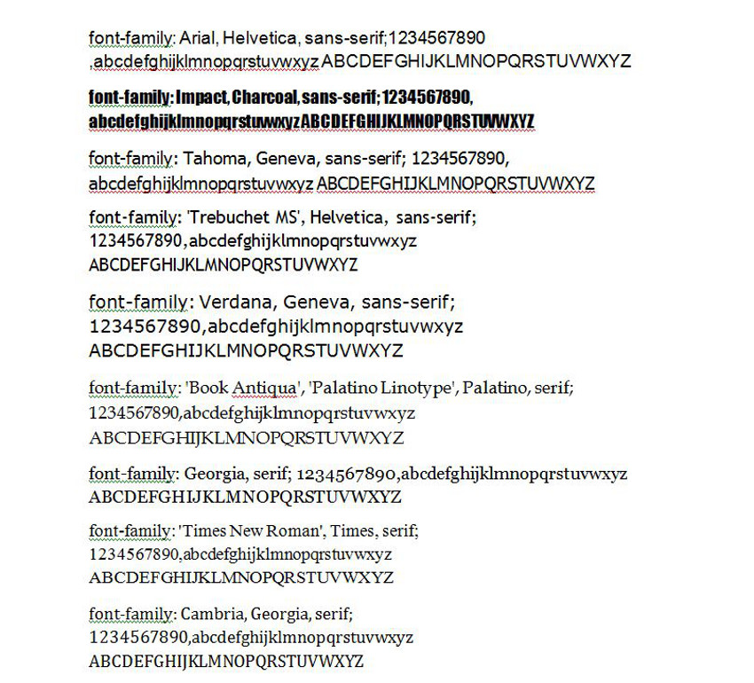

Thanks for downloading Testimonial Basics.
Testimonial Basics facilitates easy management of customer testimonials. The user can set
up an input form in a page or in a widget, and display all or selected testimonials in a
page or a widget. The plug in is very easy to use and modify:
Testimonial Basics has been validated using the W3C validator for HTML5, and has had the css validated.
It has been tested in all the major browsers:
License: GNU General Public License V3
License URI: see the license.txt file for license details.
Testimonial Basics is a WordPress Theme Plugin
Copyright (C) 2012 Kevin Archibald
Version : 1.0.0 Released 20120915
This program is free software: you can redistribute it and/or modify it under the terms of the GNU General Public License as published by the Free Software Foundation, either version 3 of the License, or (at your option) any later version. This program is distributed in the hope that it will be useful, but WITHOUT ANY WARRANTY; without even the implied warranty of MERCHANTABILITY or FITNESS FOR A PARTICULAR PURPOSE. See the GNU General Public License for more details. You should have received a copy of the GNU General Public License along with this program. If not, see http://www.gnu.org/licenses/.
Upload Testimonial Basics to the plugin directory (wp-content/plugins/testimonial-basics) of your wordpress setup. Ensure all sub directories are maintained. Activate the theme through the Wordpress Admin panel under "Plugins".
Your opening screen will look like this :
Click the Activate link and the plugin will activate. The screen changes to :
If you want to remove the plugin you must first Deactivate
it then Delete
it. When
you Deacivate
the plugin is not loaded into WordPress, but it is still there. When you
Delete
it all files,options and database table are removed.
Click on Testimonial Basics
and the Administration Panel for the plugin will load, as shown below :
There is only one option in Testimonial Basics and that is whether or not to include a Captcha on the user input forms. Including the Captcha will help reduce spam. Click the checkbox and then save. There is no successfuly saved message, just the correct status of the checkbox is returned.
There is a drop down help section that provides a quick summary of how to use the plugin. It looks like :
To add a testimonial, simply fill in the form and click Save Testimonial
:
Orderas a way to ensure certain testimonials are displayed first. Simply enter a number. Ordered displays are shown in descending order so your more favorite testimonials should have the highest number.
Once the Save Testimonial
is clicked the testimonial is checked for validation, and then it is saved in the
database. The form refreshes to include the saved testimonial. If you want to change something you can do it now,
or later if you want. Below is the screen with a couple of testimonials added.
To edit a testimonial click the button under the ID column for the testimonial you want to edit and it will come
up in the edit screen. Make your changes and Save Testimonial
. It is that simple.
You can set up a visitor input form very easily. Simply include in your page
content :
You can also use a widget as a user input form. Go to Appearance
and then Widgets
and drag the widget
to the widgetized area :
The image below shows the forms as the Visitor would see them. Both the main content form and the widget form are shown. In reality you probably should use one or the other. Visitors are required to enter an e-mail address, which is not saved. All WordPress Admin Users on your site are sent an e-mail about the testimonial. Once validation is OK, the testimonial is saved in the database. However it is saved as not approved so it is not displayed until you have a chance to log-in, edit if appropriate, and approve.
You can display testimonials in the content of a page using a shortcode and you can also use a widget to display single testimonials.
To display testimonials create a new page and enter the following shortcode :
[katb_testimonial by="date" number="5" id=""]
Note that if you put id="3" for example or id="random", then the by
and number
attributes are ignored. The image below show the set up.
An example of the display is shown below :
You can also us a widget to display a testimonial. The widget will display a selected testimonial or can randomly pick a testimonial to
display when a page reloads. You can input a title and the ID number of the testimonial you want to display or random
to display
a random testimonial from the approved list.
The image below shows the page with both the regular display and the widget display:
The color scheme has been changed as an introduction to the last section of the user documentation. What if you need to change the color scheme?
This section covers editing a CSS file. If you don't do this right it can cause issues with the plugin. But that said, it's really not that difficult. The file you need to change is testimonial-basics/css/katb_user_styles.css. If something goes wrong ensure you have a backup of the file to copy over the one you messed up.
You can use Notepad to edit the file, or I like to use Notepad++. However you can also use the editor that comes with WordPress, which is what I will do for this section.
Select edit
fromTestimonial Basics
in the Plugins
tab:
Then select the katb_user_styles.css file :
The image below shows the file in the edit screen.
The top part is where you can make changes. If you go below the warning line and make changes you do so at your peril. For those of you new to editing css files the text between the /* ..... */ are comments. They contain the defaults so you will always be able to go back.
Use web safe fonts such as the ones below :
They look like :
To illustrate I'll change to Cambria for the main display and Trebuchet for the widget display.
The next two sections list the color options for the main display and the widget display. Before I change the colors I want to talk a bit about setting css colors.
color: blue;I've gone ahead and put in the colors for the new theme. The edited file is shown below :
The results of the edit are shown below :
I hope you enjoy using the plugin, if you have any suggestions or comments, contact me through my website. If you really like the plugin, buy me a coffee, a beer, or even a bottle of wine.